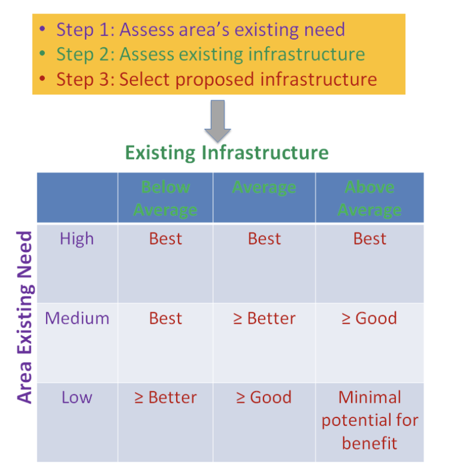

Infrastructure for Healthy Living
Project Scoping Tool for Nevada
A 3-step process to help create safer and healthier infrastructure in the Las Vegas and Reno, Nevada metropolitan areas — integrating health and equity into land use and infrastructure decisions to promote safe, walkable, bikeable, and connected communities.
How It Works
The PST follows a three-step process. In general, the higher an area’s existing need and the less conducive the area is to walking and biking, the more the recommendations aim to promote active transportation. Detailed, jurisdiction-specific instructions for Steps 1 and 2 are available on the Instructions page.
Existing Need
Uses secondary data related to health, equity, active transportation, crashes, land-use features, and connectivity to assess the project area’s existing need.
Existing Infrastructure
Uses secondary data and built-environment audits to assess the project area’s existing walking and biking infrastructure.
Select Proposed Infrastructure
Combines the results of Steps 1 and 2 to recommend infrastructure improvements for the project area.

Purpose and Disclaimer
The Project Scoping Tool (PST) is a 3-step process to help create safer and healthier infrastructure in the Las Vegas and Reno, Nevada metropolitan areas by integrating health and equity into land use and infrastructure decisions to promote safe, walkable, bikeable, and connected communities.
The PST makes actionable recommendations based on data, evidence, and community voices. It is intended to be used by planning, public works, design, and transportation professionals.
Its recommendations are intended to inform the decisions of these professionals and to supplement their expertise as they use their judgement and local project context to determine which recommendations are appropriate.
Disclaimer
This PST relies on several external sources of information, data, and analysis. The accuracy, recency, and availability of this information, data, and analysis depends on the organizations that maintain them. It cannot be guaranteed.
PST sources should be periodically verified and the PST updated to reflect any changes.
Attribution Statement
The Nevada Vulnerable Road User Safety Project, which updates the PST, was supported by TS-2025-UNLV-95, funded by the Nevada Office of Traffic Safety and the Nevada Department of Transportation.
The original PST was supported by grant #NU58DP6578, funded by the Centers for Disease Control and Prevention and awarded to the Southern Nevada Health District. Its contents are solely the responsibility of the authors and do not necessarily represent the official views of the Centers for Disease Control and Prevention or the Department of Health and Human Services.
Collaboration
The development and updates of the PST were made possible through collaboration among the following partners:
Questions?
Contact vru@unlv.edu to get more information on the project.